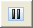
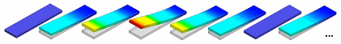
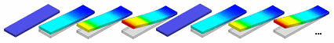
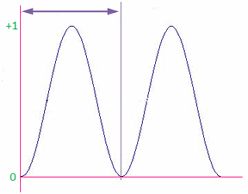
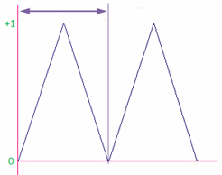
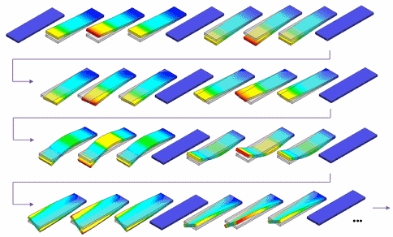
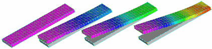
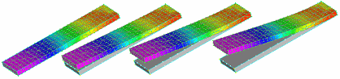

Animate command bar
- Close
-
Cancels the animation.
- Play
-


Play/Pause-
Plays the animation from the current frame. When pressed a second time, it pauses the animation at the current frame.
- Stop
-
Stops the animation. Resets the frame number to 0, and returns the model display to what was being shown prior to selecting the Animate command.
- Previous Frame
-
Steps backward through the animation one frame at a time when the animation is paused.
- Current Frame Number
-
While the animation plays, the current frame number box updates to show the current animation frame. When the animation is paused, you can type in the box to jump to a particular frame.
- Next Frame
-
Steps forward through the animation one frame at a time when the animation is paused.
- Properties
-
- Frames per second
-
Specifies how many frames per second are used to display the animation. More frames per second produce a smoother animation.
- Cycle length (seconds)
-
Specifies the duration of the animation cycle, in seconds.
When the Animate Across Modes option is set, the cycle length is the duration for each mode.
 Animate Full Cycle
Animate Full Cycle-
Full cycle shapes smoothly return to their starting position while half cycle shapes jump back.
When this option is set (A), a full cycle will play from start to end, and then end to start, and continue to repeat.
(A)

When this option is cleared (B), a half cycle will play from start to end, and then start to end again, and continue to repeat.
(B)

 Animate Sinusoidal Cycle
Animate Sinusoidal Cycle-
A sinusoidal cycle results in a smoother and more visually appealing animation than a linear cycle.
When set, this option animates the cycle in a sinusoidal fashion.

When cleared, this option animates the cycle in a linear fashion.

- Animate Across Modes
-
Animates the selected result component across multiple modes. This option produces the animation for one mode, and then moves to the next mode, and then the next mode, until it reaches the last mode and then continues to repeat from the first mode.

The Animate Full (or Half) Cycle and Animate Sinusoidal (or Linear) Cycle options are applied to each individual mode animation. The animation cycle length is the duration in seconds for each individual mode.
- Animate Contours
-
When this option is set (A). animates the contours on the model.
(A)

When this option is cleared (B), the contours are displayed but not animated.
(B)

Note:The Home tab→Show group→Contour check box must be selected to display model contours.
- Other
-
- Save As Movie
-
Displays the Save As Movie dialog box, so you can save the current animation as an .avi file.
How do I
Plot resultsAdjust the color bar
Animate simulation results